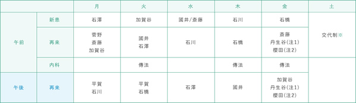

ひとりで悩まずに、
ご相談ください。
お困りのことはありませんか？
お困りのことはありませんか？
Information
2021/00/00
【重要】新型コロナウイルス及びその他感染症対策の対応について2021/00/00
ホームページをリニューアルしました2021/00/00
令和3年6月のデイ・ケアプログラムのお知らせ2021/00/00
令和3年4月のデイ・ケアプログラムのお知らせ2021/00/00
メープルガーデン販売のパンの新製品が出来ましたResponsible table
令和2年5月21日より
| 月 | 火 | 水 | 木 | 金 | 土 | ||
|---|---|---|---|---|---|---|---|
| 午前 | 新患 | 石澤 | 加賀谷 | 國井/斎藤 | 石川 | 石橋 | 交代制※ |
| 再来 | 菅野 斎藤 加賀谷 |
國井 石澤 |
石川 | 石橋 | 斎藤 丹生谷(注1) 櫻田(注2) |
||
| 内科 | 傳法 | 傳法 | 傳法 | ||||
| 午後 | 再来 | 平賀 石川 |
平賀 石橋 |
石澤 | 國井 | 加賀谷 丹生谷(注1) 櫻田(注2) |
|
※病院掲示板にてご確認ください
月曜日に紹介入院はお問い合わせ下さい
注1：第2・4週診察日
注2：第1・3・5週診察日
efforts